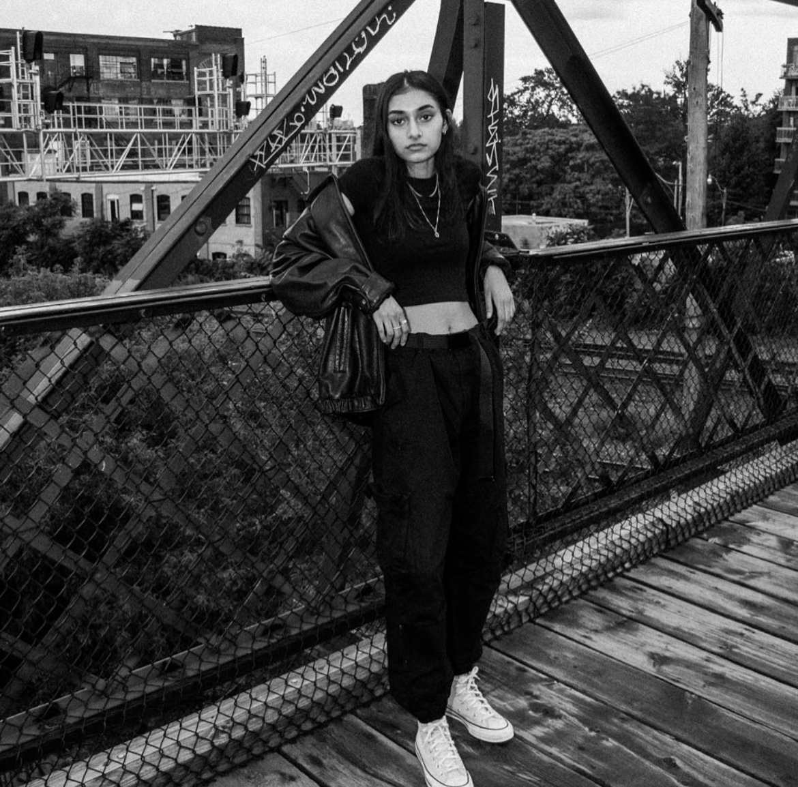

ABOUT

Harman Lall is a South Asian Canadian graphic designer specializing in typography. Her work focuses on creating meaningful messages while adding comedic relief to her work. She reflects on her identity of being a first-generation South Asian Canadian and brings that energy into her design to honour her Punjabi heritage.
Harman is currently studying Graphic Design at George Brown College and works as a freelancer.
Harman loves Harry Potter, Bollywood music, contemporary art, vintage clothing, and video games.